Semantic Analysis Arsenal
MODERNIZING BUSINESS ANALYSIS THROUGH SEMANTIC CLARITYOperational roadmap for clarity-systems instrumentation.
Operational Briefing
The Semantic Analysis Arsenal is an emerging precision‑built suite of micro‑instruments developed to expose, stabilize, and operationalize meaning across analysis, modeling, validation, and structural design. Each instrument isolates a single semantic capability—compact by design, rigorously scoped, and built to demonstrate how clarity can be decomposed, measured, aligned, and prepared for downstream interface or automation consumption.
These micro‑instruments are functional prototypes of larger semantic‑systems software built on Python, AI, and lightweight modeling frameworks. They are intentionally minimal: engineered to illustrate semantic mechanics rather than serve as production‑grade applications. Each instrument performs real semantic operations, demonstrating how meaning can be engineered—not assumed.
Strengthening Modern Business Analysis
Beyond their semantic purpose, these instruments directly modernize and strengthen traditional business analysis work. They provide analytical rigor where BA practices
often rely on intuition, narrative interpretation, or inconsistent, rapidly outdated documentation. By mechanizing clarity, drift detection, alignment, and requirement validation,
the Micro‑Arsenal elevates BA workflows into repeatable, measurable, and structurally reliable processes.
This positions semantic analysis not as a replacement for business analysis, but as its next evolutionary layer.
Capabilities Demonstrated
- Meaning Extractions - isloating atomic intent
- Meaning Grouping - clustering relational concepts
- Meaning Stability Analysis - detecting drift across contexts
- Meaning Modeling - structuring conceptual and workflow logic
- Meaning Validation - confirming interpretive accuracy
- Meaning Boundary Detection - surfacing ambiguous or unstable edges
- Meaning Alignment - synchronizing stakeholder interpretations
- Meaning-Driven Data Architecture - translating narrative intent into structural models
- Feature Readiness Assurance - clarifying and validating functional requiremnts
- User Story Synchronization - establishing tightly-coupled implementation requirements and dependencies
Together, these instruments form a semantic reasoning stack that demonstrates how unstructured content can be decomposed, clustered, validated, stabilized, and transformed into structured knowledge and data models. The arsenal shows how meaning can be engineered—not assumed—supporting any mission where clarity, interoperability, and precision are prerequisites for reliable system behavior and confident project implementation and testing team performance.
Foundational Arsenal
The Foundational Arsenal is the system’s operational substrate—compact, deterministic micro‑tools built to execute narrowly scoped
semantic functions with precision and zero interface drag. Each instrument isolates a single clarity mechanism, demonstrating how disciplined
constraint reduces cognitive load and establishes the base layer for larger semantic‑systems architectures
These prototypes are delivered in lightweight JavaScript for fast, browser‑based interaction. Their purpose is to expose semantic mechanics,
while full‑scale Python and AI‑driven versions evolve separately. The JS tools are functional demonstrations, not full representations of the
production‑grade instruments they will become.
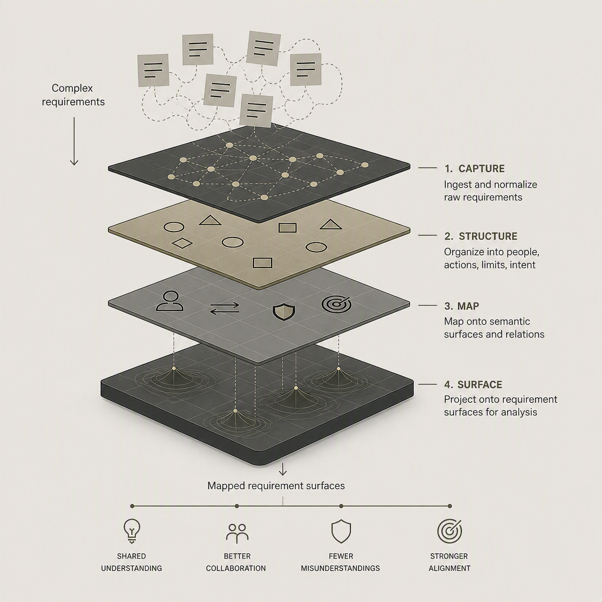
Requirement Surface Mapper
The Requirement Surface Mapper helps teams uncover what their requirements actually mean before they start designing, building or testing. It breaks each statement into its essential parts — the people, actions, and limits involved — and highlights where wording might cause confusion or overlap. By turning raw requirement text into a clear, structured map, it exposes hidden gaps and contradictions early. That means fewer misunderstandings, cleaner collaboration, and stronger alignment between analysts, designers, developers, and testers.
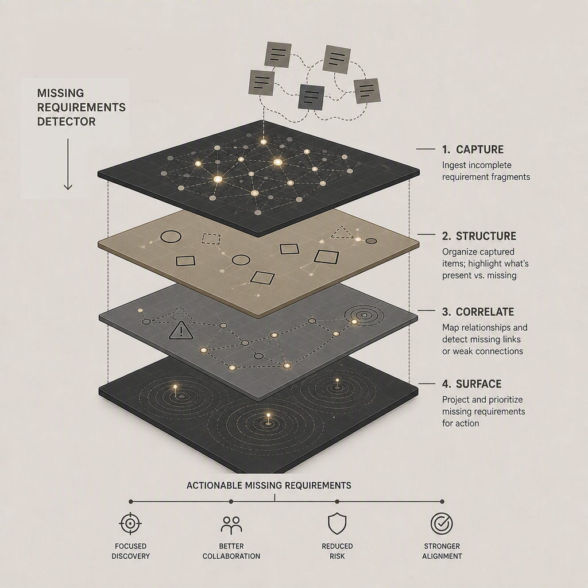
Missing Requirements Detector
The Missing Requirements Detector (MRD) is a text-based and semantic micro‑tool that performs conceptual gap analysis on user stories and requirement fragments. It identifies absent requirement primitives—context, assumptions, constraints, workflow logic, data touchpoints, risks, and acceptance criteria—that commonly lead to ambiguity and rework. Rather than rewriting or expanding the source text, MRD isolates missing semantic structures and outputs a structured gap map that can be injected directly into any AI platform or refinement workflow. By exposing absence as a measurable signal, MRD strengthens requirement clarity, stabilizes AI‑assisted analysis, and improves engineering reliability across iterative refinement cycles.
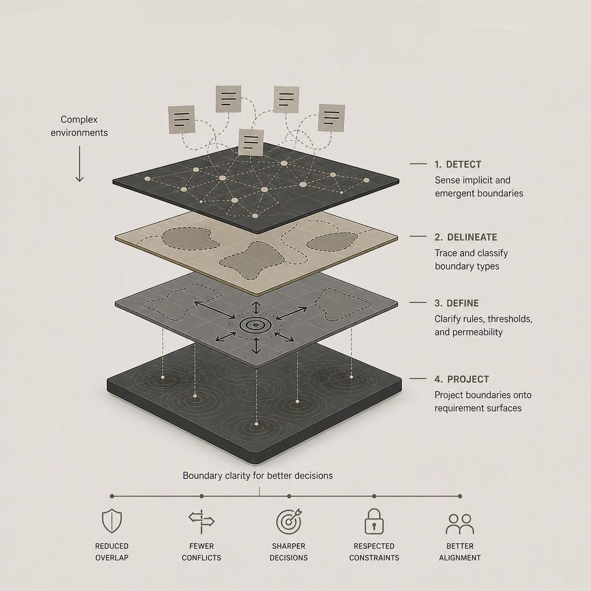
Feature Readiness Audit
The Feature Readiness Audit is a semantic micro‑instrument designed to evaluate whether a Feature contains enough structural clarity, workflow coherence, and meaning‑level completeness to be safely decomposed into user stories. It performs a multi‑layer semantic scan across intent, workflow, rules, constraints, actors, transitions, and dependencies to determine whether the Feature is stable enough to enter delivery without generating churn, defects, or rework. The output is a readiness signal, a semantic gap map, and a decomposition risk profile that shows whether the Feature is structurally sound or still an ambiguous narrative blob.
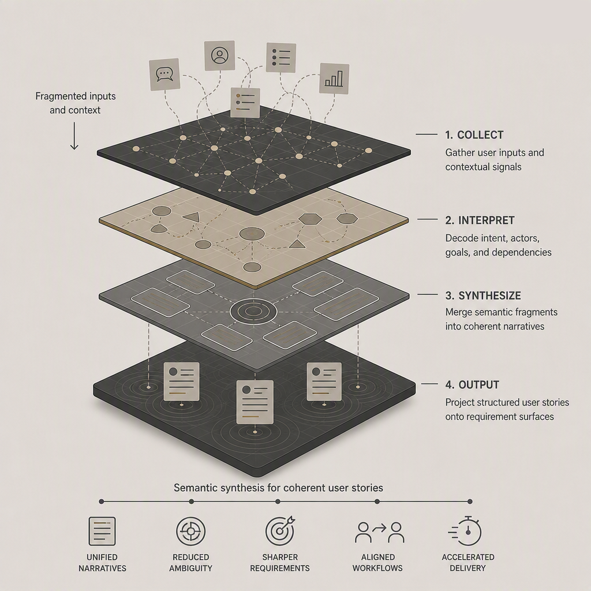
User Story Synthesizer
The User Story Synthesizer is a semantic micro‑instrument that converts meaning‑structures into decomposed delivery units. Instead of generating templated stories, it performs a meaning‑first analysis across actors, actions, constraints, triggers, and outcomes, then synthesizes structurally valid user stories and acceptance criteria. The instrument ensures that each story reflects the original intent, aligns with system behavior, and maintains semantic stability across decomposition.
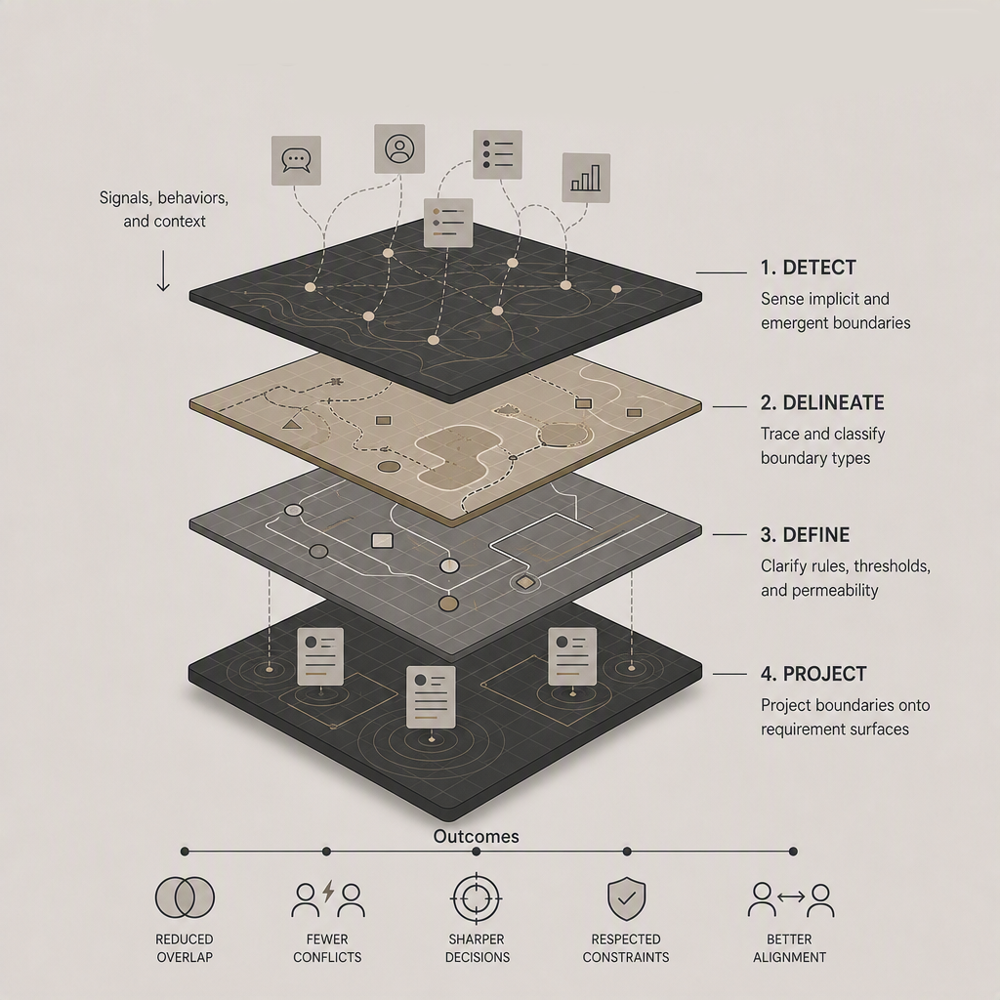
Boundary Mapper
The Boundary Mapper helps teams visualize where conceptual, operational, or design boundaries emerge within complex environments. It detects overlaps, delineates edges, and defines thresholds — revealing where clarity ends and drift begins. By projecting these boundaries onto structured surfaces, it supports better decisions and stronger alignment across disciplines.
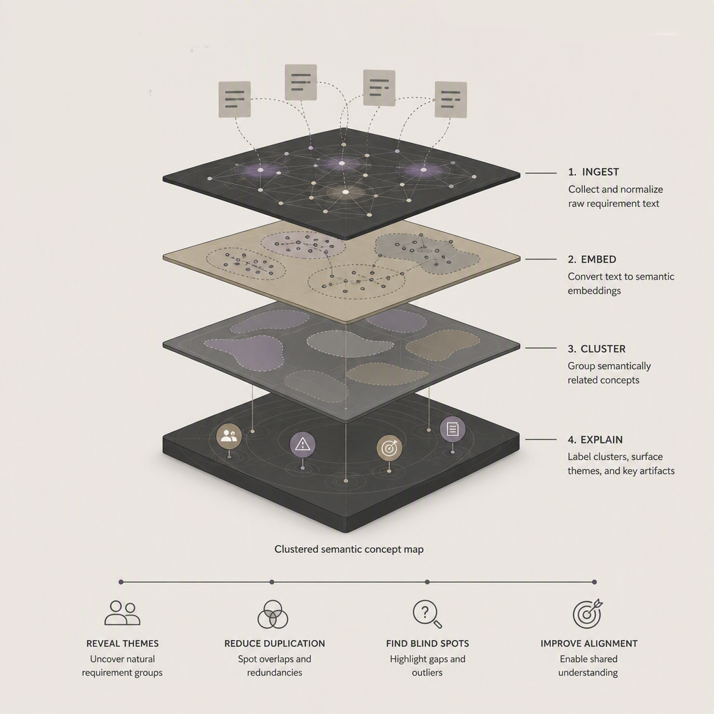
Semantic Concept Clusterer
The Semantic Concept Clusterer organizes atomic meaning units into coherent clusters, revealing how concepts align, overlap, and diverge within complex datasets. It applies contextual proximity analysis to expose relational meaning structures — showing how cohesion and divergence shape understanding. By surfacing emergent themes and boundary cues, it helps teams interpret conceptual relationships with clarity and precision.
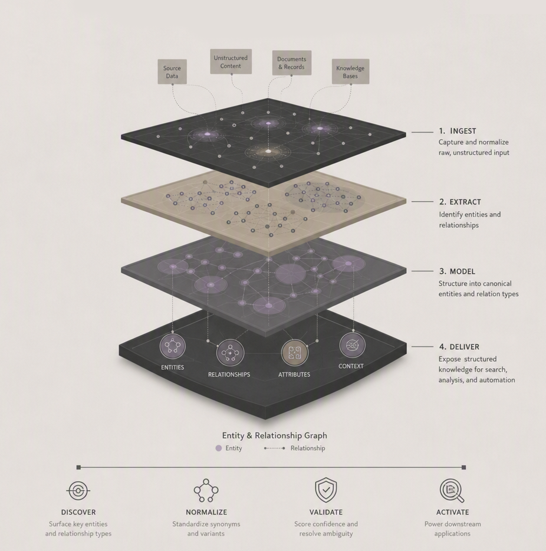
Entity & Relationship Extractor
The Entity & Relationship Extractor identifies and structures the relationships embedded within complex semantic environments. It parses raw language into discrete entities, then maps their interconnections to reveal how meaning propagates through systems. By converting ambiguity into relational clarity, it supports precision modeling and operational alignment across domains.
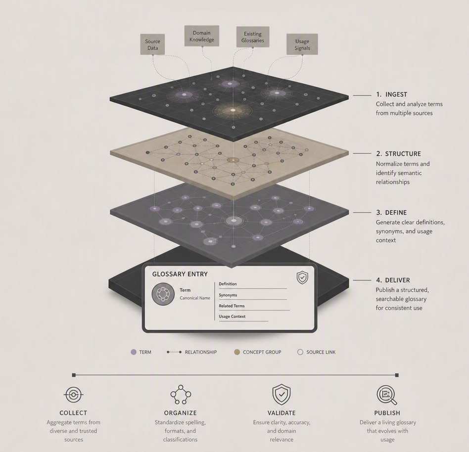
Semantic Glossary Builder
This micro‑tool constructs a domain‑specific glossary by extracting terms, normalizing definitions, and aligning them to their operational context. It identifies lexical drift, resolves synonym collisions, and establishes stable meaning anchors that teams can reference during analysis and design. By generating a coherent terminology layer, the glossary builder reduces interpretive variance and strengthens semantic interoperability across documents, workflows, and stakeholders.
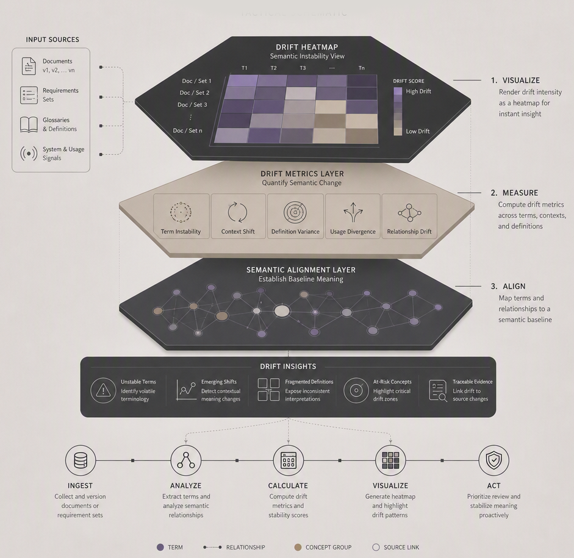
Drift-Heatmap Generator
The Drift‑Heatmap Generator quantifies semantic drift across documents or requirement sets and visualizes divergence as a structured heatmap. It measures term instability, contextual shifts, and definition variance — exposing where meaning weakens or fragments over time. By translating drift metrics into an interpretable visual surface, it enables rapid detection of unstable terminology, misaligned understanding, and emerging ambiguity zones. In short, the Drift‑Heatmap Generator is being refined to make semantic degradation visible — allowing teams to restore clarity before it propagates into design or implementation.
Composite Arsenal
The Composite Arsenal contains multi‑function clarity instruments—integrated tools that combine several semantic mechanisms
into cohesive, higher‑order workflows. Each composite demonstrates how individual micro‑tools can be orchestrated into structured,
deterministic systems that resolve complex ambiguity patterns and support scalable semantic‑architecture design.
These tools move beyond isolated mechanics. They model how clarity behaves when multiple analytical constraints interact, revealing the
system‑level behaviors required for production‑grade semantic tooling. Like the Foundational Arsenal, the Composite Arsenal is delivered
in lightweight JavaScript for rapid, browser‑based interaction, while full‑scale Python and AI‑driven implementations evolve separately.
The JS versions exist to expose composite semantic behavior, not to fully represent the final professional instruments.
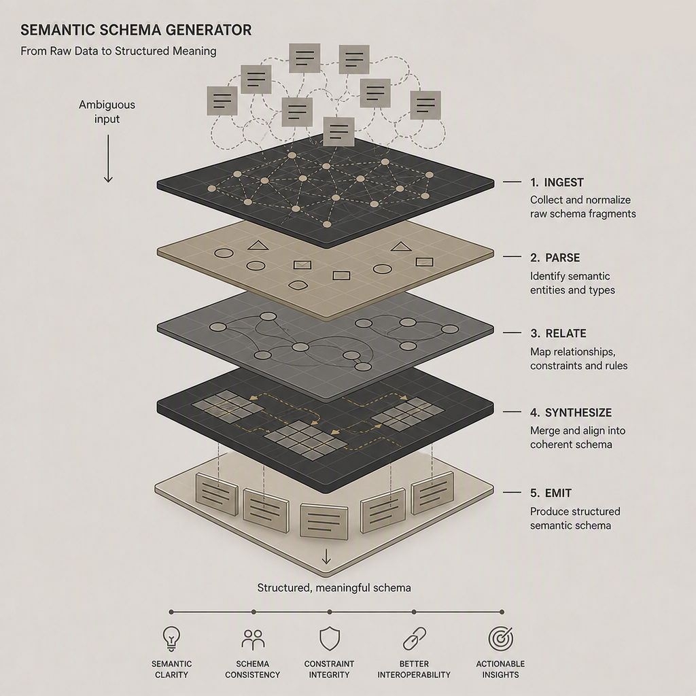
Semantic Schema Generator
The Semantic Schema Generator constructs structured meaning frameworks from fragmented data models, transforming raw entities and attributes into coherent semantic architectures. It interprets relational patterns, contextual dependencies, and definitional hierarchies — revealing how information aligns or diverges across systems. By synthesizing schema logic into a unified semantic layer, it enables rapid detection of structural inconsistencies, redundant definitions, and missing conceptual links. In short, the Semantic Schema Generator is being refined to make schema integrity visible — allowing teams to engineer clarity before data complexity propagates into design or implementation.
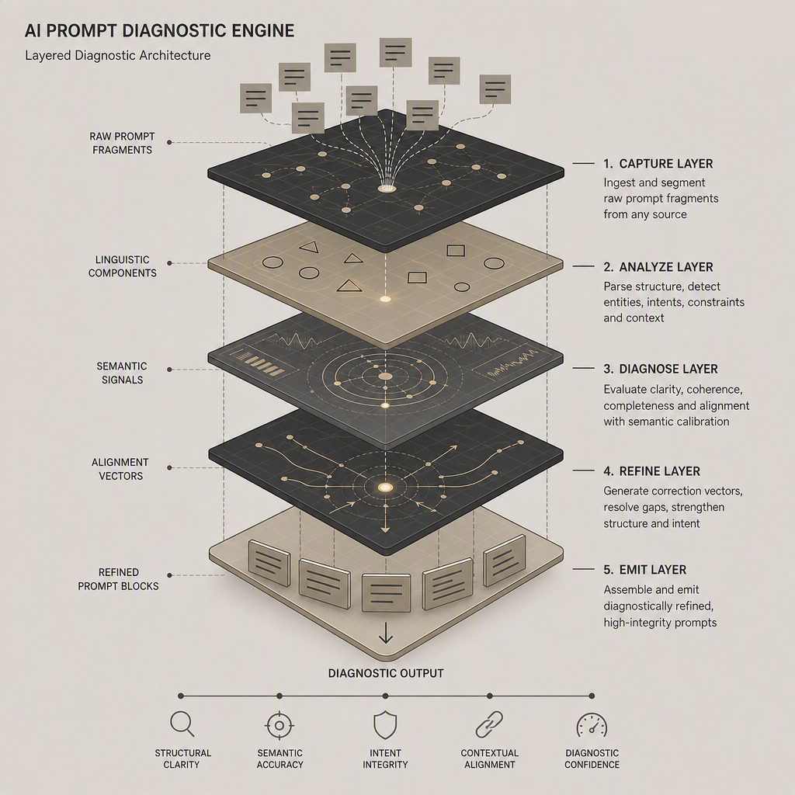
AI Prompt Diagnostic Engine
The AI Prompt Diagnostic Engine transforms vague, inconsistent user prompts into structured, semantically stable input frames. It decomposes intent into predictable components—Role, Task, Inputs, Constraints, and Output Structure—creating a consistent meaning architecture interpretable by any AI system. By translating linguistic ambiguity into diagnostic clarity, it exposes weak phrasing, misaligned intent, and incomplete semantic signals. In short, the AI Prompt Diagnostic Engine is being refined to make prompt integrity visible—allowing teams to stabilize meaning before it propagates into generation or analysis.
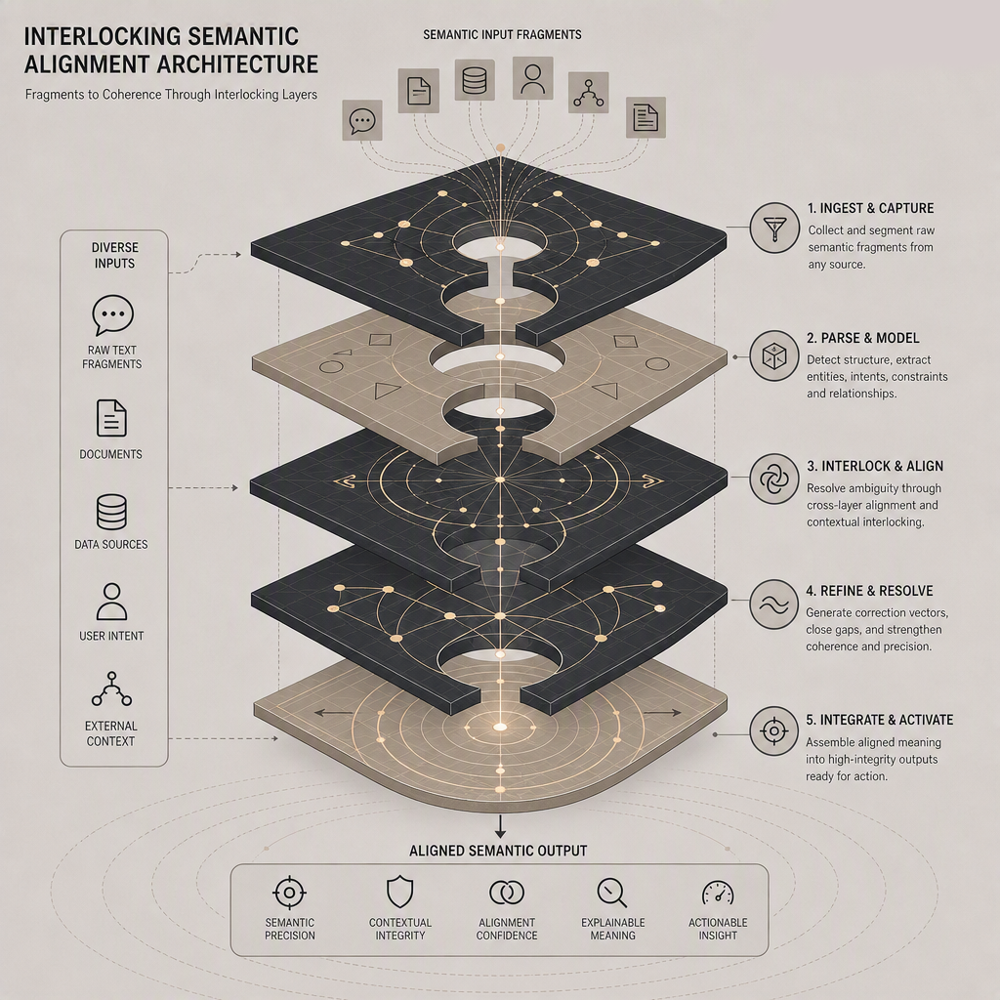
Semantic Alignment Engine
The Semantic Alignment Engine transforms fragmented meaning into coherent semantic structures by interlocking linguistic, contextual, and conceptual layers. It captures diverse input fragments—text, data, or imagery—and aligns them through progressive modeling and refinement. By resolving ambiguity and harmonizing intent across sources, it exposes misalignment zones and restores semantic coherence. In short, the Semantic Alignment Engine is being refined to make meaning convergence visible—allowing teams to synchronize understanding before inconsistencies propagate into design or communication.
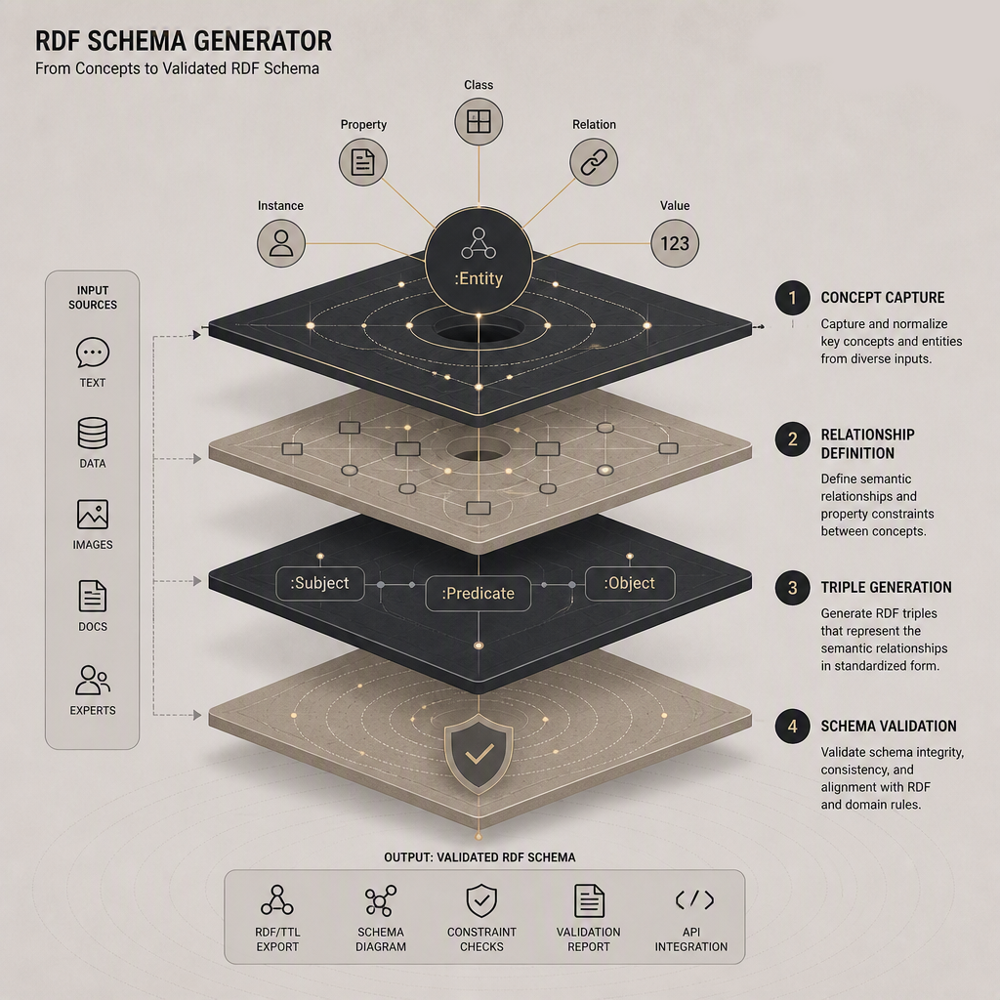
RDF Schema Generator
The RDF Schema Generator converts conceptual clarity into machine‑readable structure. It demonstrates how semantic relationships can be formalized into RDF schemas that define entities, attributes, and logical connections. Each schema acts as a semantic snapshot—a structured reflection of meaning captured from analytical input. This micro‑tool modernizes data modeling by transforming linguistic definitions into RDF‑compliant models ready for integration with ontologies or enterprise data systems. Lightweight yet functional, it shows how meaning can be engineered into structure, bridging semantic analysis and data architecture.
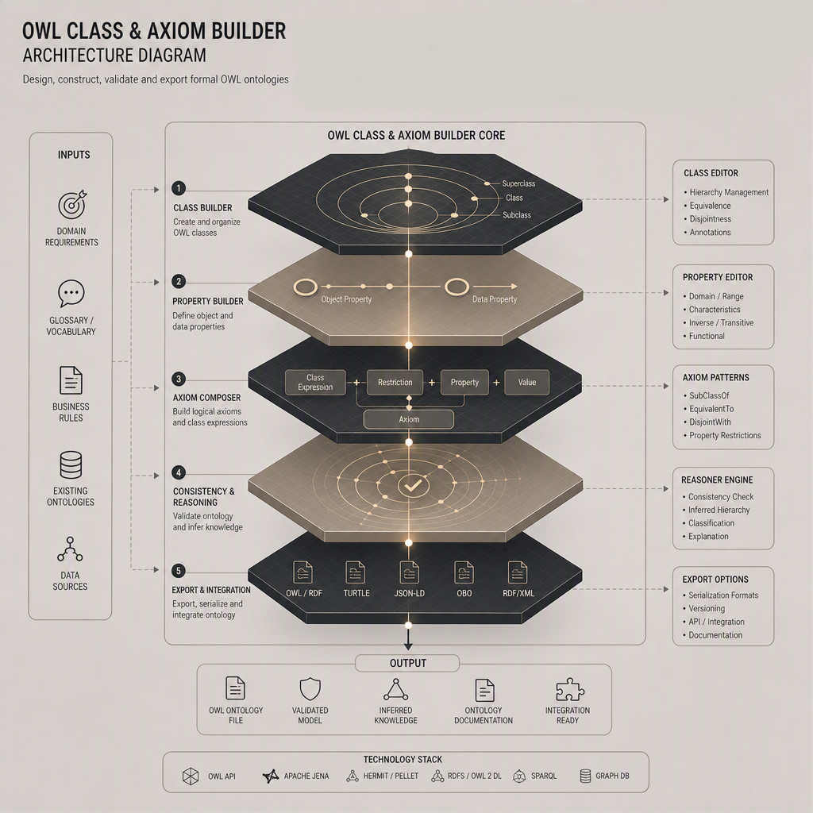
Owl Class & Axiom Builder
The OWL Class & Axiom Builder constructs formal ontological frameworks that translate domain knowledge into machine‑interpretable logic. It defines classes, properties, and axioms with precision—enabling consistent reasoning across complex semantic models. By automating ontology composition and validation, it exposes logical gaps, redundant assertions, and misaligned relationships. In short, the OWL Class & Axiom Builder is being refined to make ontological integrity visible—allowing teams to engineer clarity before semantic inconsistencies propagate into data or design systems.
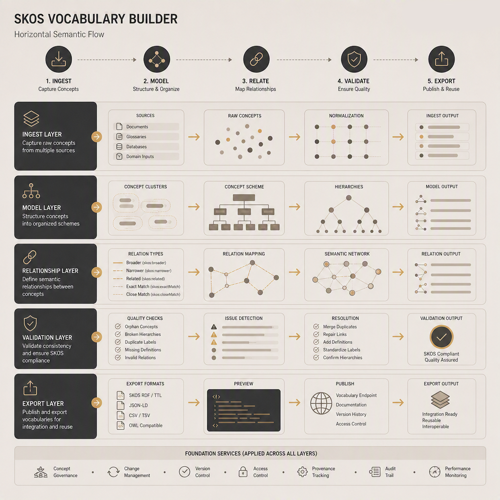
SKOS Vocabulary Builder
The SKOS Vocabulary Builder organizes domain terminology into structured, interoperable vocabularies that enhance semantic consistency across systems. It models concepts, relationships, and hierarchies—transforming fragmented language into a unified lexical architecture. By mapping broader, narrower, and related terms, it exposes definitional gaps, redundancy, and misalignment between vocabularies. In short, the SKOS Vocabulary Builder is being refined to make conceptual structure visible—allowing teams to standardize meaning before linguistic drift propagates into data or design frameworks.
Frequently Asked Questions
It's a one-person project at this time.
I personally have more questions than answers at this point.
More technical information / documentation will be made available on the projects Github page when available.
1. What is the Semantic Analysis Arsenals purpose?
It's a collection of personally developed analytical tools based on semantic data modelling that support traditional business analysis. I am building a semantic-systems framework designed to modernize Business Analysis through engineered clarity. The site presents the initial operational roadmap, not a live product demo.
2. Is this Arsenal fully operational?
The instruments are in initial functional development with JavaScript for rapid access. Professional versions of the tools are being developed in Python with AI-Augmentation as well. What you see here is the current roadmap architecture; live POC demonstrations are available upon request.
3. How exactly does this modernize Business Analsysis?
Modernizing BA work means shifting the role away from manual documentation, translation, and ceremony toward strategic clarity, system‑level framing, and automated production of low‑value artifacts. My tooling replaces repetitive BA labor with semantic engines that generate structured outputs directly from context, letting the BA operate at a higher altitude.
4. Do you plan to share these tools?
Possibly. If there is interest in this work from others I will make the project Open Source to scale production versions. I am always interested in engaging with others who are truly motivated to modernize the BA profession.
5. How can I follow this work?
These tools will be located in Github soon at more technical level.
5. So Who are You?
The best way to find out more and contact me at this time is on LinkedIn - Brian Fabrizio